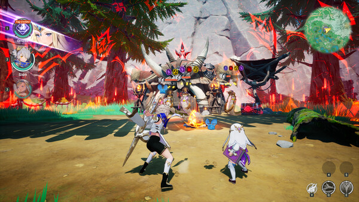
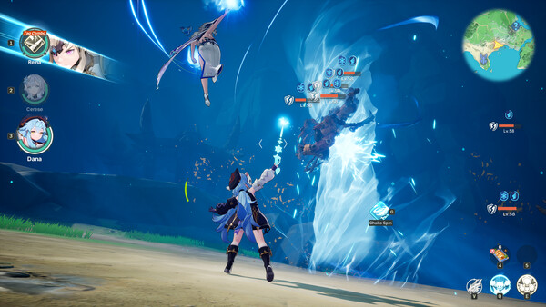
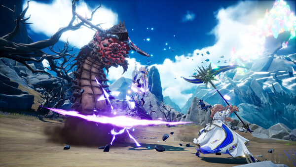
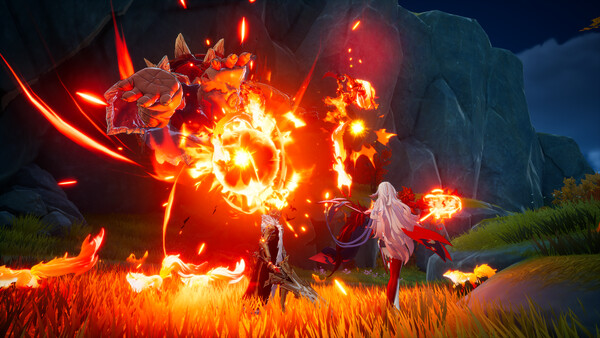

Open
Read the enemy
Circle first, learn the attack rhythm and avoid spending every dodge or skill at once.
New player handbook · No major spoilers
Master the tag-team rhythm, build a party that actually works, and cross the Continent of Orbis without wasting your best resources.
Choose your route
Game overview
DragonSword: Awakening is an anime-style open-world action RPG set on the Continent of Orbis, sixty years after a legendary dragon last threatened the land.
You play as Lute, a young traveler drawn into mercenary life after meeting Johnny and the Elf Castella. What begins as a lively journey through human civilization soon grows into a continent-spanning fight against an awakened ancient threat.
The game mixes free-roaming exploration, story quests, dungeons, cooking, mounts and large enemy encounters with a combat system built around switching between heroes at the right moment. It looks like a character collector, but the Steam edition is a premium RPG: every playable hero can be earned through play.
Before you begin: Play it like a party action RPG, not a solo-character brawler. The strongest early upgrade is learning how your three heroes hand attacks to one another.

Basic gameplay
Most beginners focus on raw damage. DragonSword rewards timing and party chemistry more.
Open
Circle first, learn the attack rhythm and avoid spending every dodge or skill at once.
Set up
Use the hero whose kit can place the condition your next teammate wants.
React
When the prompt appears, tag in the matching hero. This is your main burst window.
Extend
Continue the sequence if safe, or reset your spacing before the enemy retaliates.

Cover setup, payoff and survival. A coherent trio beats three individually strong heroes.
Save a dodge for the end of an enemy string. Greedy animation locks cause most early knockouts.
Rotate heroes instead of waiting on one kit. You maintain pressure and build more signal opportunities.
Character introduction
The launch roster contains 19 playable heroes. These three define the opening journey; let their mechanics teach you what kind of party you enjoy.
The traveler
The young protagonist heading toward Orbis. Lute is your point of view into the world and the natural anchor for learning core movement, melee pressure and party switching.
The mercenary
A seasoned mercenary who pulls Lute into hired life. His story role represents the confident, forward-moving side of combat: act decisively, then create room before the counterattack.
The Elf
An eccentric Elf who joins Lute early. She broadens the party beyond straightforward swordplay and encourages you to pay attention to control, setup and the timing of team interactions.
playable heroes
available through progression
Do not spend progression materials evenly across everyone. First build one reliable trio, then invest in specialists when a dungeon or boss asks for a different answer.
Progression & stage tips
Use these checkpoints when the game opens up or a difficult encounter stalls your progress.

Opening hours
Use early encounters to memorize a single Status Ailment → Signal Skill pair. Consistency is more useful than trying every hero at once.

Open-world phase
Travel from a hub toward one objective, clear nearby discoveries, then return. This keeps upgrades and side content close to your current power level.

Dungeons
Before entering, decide who starts the combo, who converts the ailment into burst damage and who gives you a safe reset.

Boss walls
On a new boss, spend the first attempt learning tells. Large attacks usually become manageable once you recognize the pause, sound or posture that precedes them.
Frequently asked questions
Quick answers based on the official Steam listing and launch information. Game systems may evolve after release.
No. The Steam edition is a premium action RPG. All 19 playable heroes are earned through quests or assembled with the in-game Nameless Souls material rather than pulled from a paid character gacha.
Yes. The story and open world are built around single-player play. Official launch guidance says you can play offline as long as you are logged into Steam. The Steam page also lists online co-op for supported activities.
Continue the story, complete relevant quests and collect Nameless Souls where required. You will not begin with the full roster, so focus your early resources on the first dependable party you assemble.
It is a team interaction triggered when an enemy meets the right Status Ailment condition. Apply the needed condition with one hero, then respond to the signal prompt by bringing in the compatible teammate.
Prioritize one balanced three-hero team and the equipment that directly supports its main combo. Spreading limited materials across the entire roster slows your first clear more than it helps flexibility.
The Steam minimum lists Windows 10, an Intel i5-9400F, 8 GB RAM, a GTX 1660, DirectX 12 and 25 GB of storage. An SSD is strongly recommended; the recommended tier lists an i7-9700F, 16 GB RAM and an RTX 3060.

Field guide complete
Build one reliable trio, learn the enemy's rhythm and let every switch have a purpose.
Open the Steam page